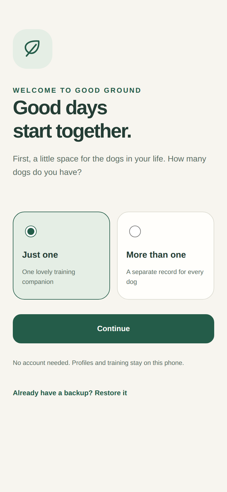
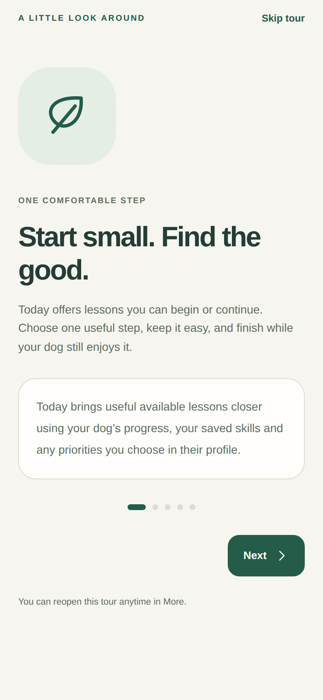
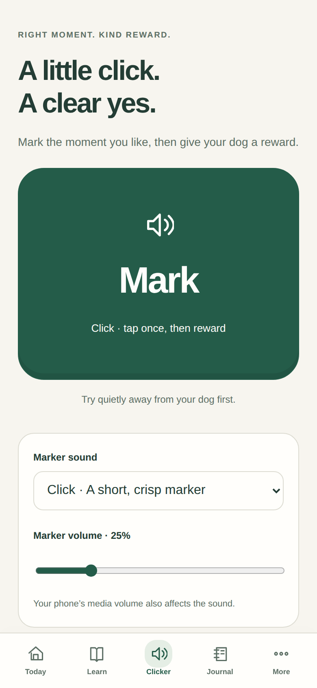
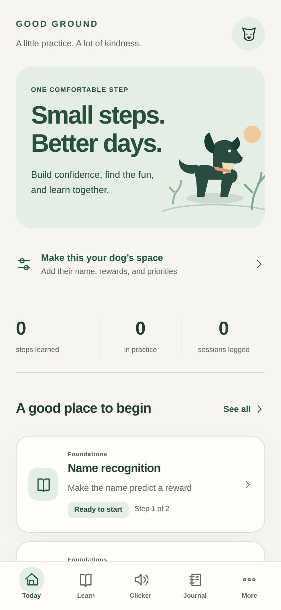
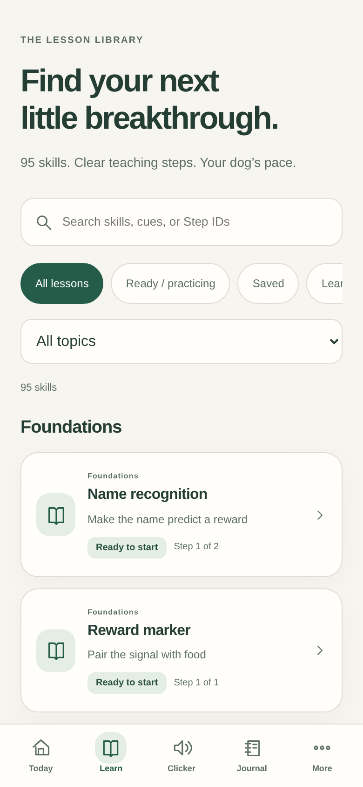
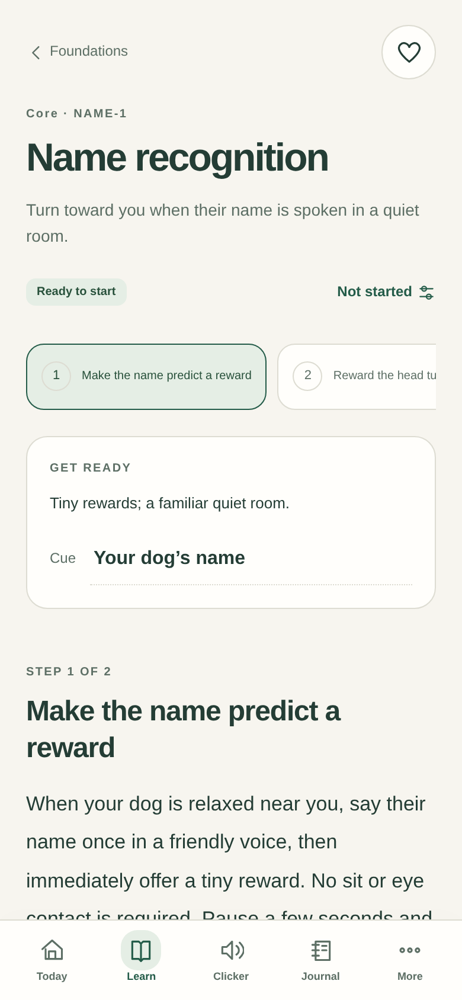
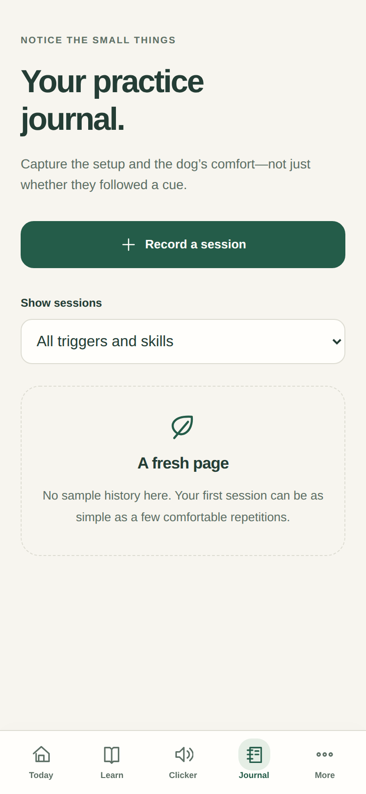
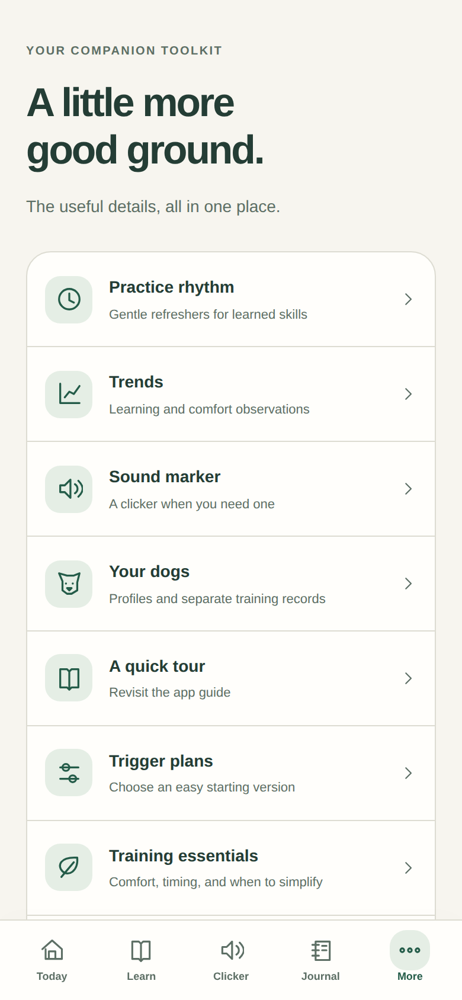
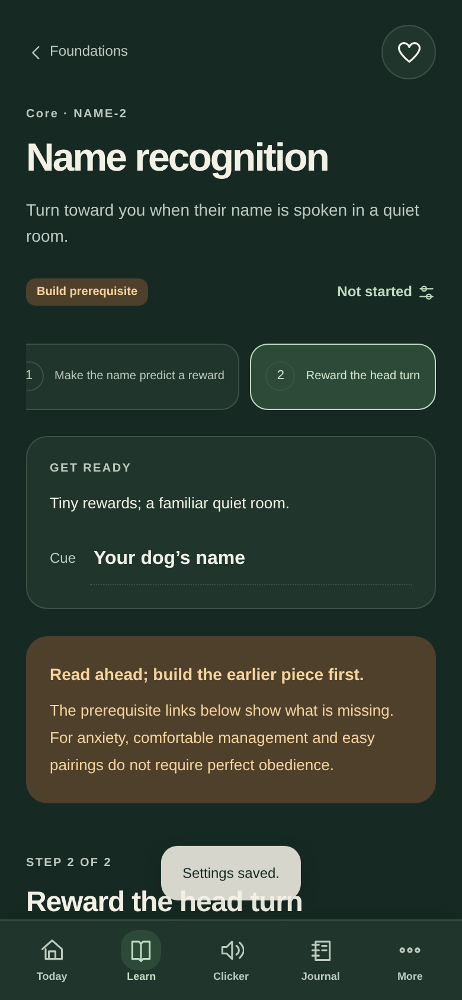

A little practice.
A lot of kindness.
95 skills. 230 real teaching steps. A quiet, local companion for you and your dog.
These are actual rendered interface screens. The updated unsigned iPhone bundle reuses the existing native shell. Installation and audible output still need a check on your device.

A gentle first welcome
A short, replayable tour
Clicker · Mark, then reward
Today · One comfortable step
Learn · Find a useful goal
Lessons · Actual guidance
Journal · Honest observations
More · The useful details
Appearance · Comfortable contrast